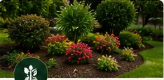
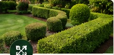
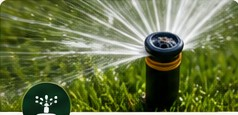

General Lawncare
Professional lawn maintenance for a clean, attractive outdoor space.
JMD 8,000Book ServiceYardscape Landscaping & Beautification Services provides dependable landscaping and beautification services for homes, businesses and properties across Jamaica.
Book a Service
Based in St. Ann, Yardscape serves customers islandwide with practical, attractive and dependable outdoor care.
Book online, choose a date and time, or request a quote for quote-based services. Appointments remain pending until Yardscape confirms them.
Professional lawn maintenance for a clean, attractive outdoor space.
JMD 8,000Book Service
Keep plant beds neat, healthy and beautifully maintained.
Quote RequiredRequest QuoteFlower planting designed to add colour and beauty to your outdoor space.
Quote RequiredRequest Quote

Reliable sprinkler installation for consistent landscape watering.
JMD 12,000Book Service